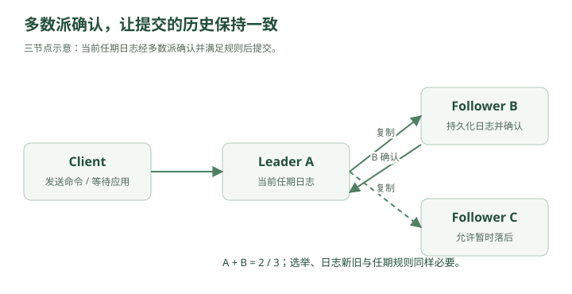

凌晨两点。
北京机房和上海机房之间的专线突然抖了一下。
最开始没人注意。
因为：
北京 Region：正常
上海 Region：正常
两边机器都活着。
CPU 正常。
数据库正常。
应用正常。
但是很快，报警出现：
Beijing → Shanghai timeout
Shanghai → Beijing timeout
林默盯着屏幕。
“机器都没挂，为什么系统报警？”
老周看了一眼。
“因为这次不是机器坏了。”
“是它们——”
彼此听不见了。
一、什么叫网络分区？
原本：
Beijing DB
│
│ 网络正常
│
Shanghai DB
现在：
Beijing DB
X
Shanghai DB
两边机器其实都活着。
只是网络断开。
这叫：
Network Partition
网络分区。
也可以理解为：
一个分布式系统被网络切成了两个彼此无法通信的岛。
这件事情非常危险。
因为两边都会想：
“我还活着。”
而且它们不知道：
“对方到底是挂了，
还是只是网络断了？”
二、分布式系统最烦人的地方：你无法区分“挂了”和“没回消息”
林默说：
“那我 ping 一下不就知道了？”
老周摇头。
假设：
A → B
请求 1 秒没有回应。
可能原因：
B 挂了
网络断了
网络拥塞
B 很忙
GC Stop-The-World
磁盘卡住
线程池满了
A 看到的只有：
timeout
它无法百分之百知道到底是哪一种。
这就是分布式系统一个非常根本的问题：
没有回应，不等于对方已经死亡。
三、事故真正开始了
公司的用户资料系统做了双 Region。
北京：
User DB A
上海：
User DB B
正常时：
A ↔ B
不断同步。
网络分区之后：
A X B
这时北京用户把昵称改成：
Alpha
上海用户同时把昵称改成：
Beta
北京数据库说：
name = Alpha
上海数据库说：
name = Beta
网络恢复之后，两边一见面：
A：我是 Alpha
B：我是 Beta
谁是真的？
林默沉默了。
四、这就是一致性问题
如果系统有一个副本：
只有 A
那么世界很简单。
数据就是：
A 里面是什么
就是什么
但一旦有多个副本：
A
B
C
就必须回答：
多个副本看到的数据，应该保持到什么程度的一致？
这就是：
Consistency
一致性。
五、最理想的情况：强一致性
林默说：
“那就要求所有节点永远一样。”
老周：
“这就是强一致性的直觉。”
比如用户把余额：
1000
改成：
900
如果写成功，
之后任何节点读取，都必须看到：
900
而不能有人看到：
1000
这类保证可以粗略理解为：
Strong Consistency
强一致性。
更严格的分布式语义里，还会讨论：
Linearizability
线性一致性。
它要求系统表现得像：
所有操作仿佛在一台机器上按某个全局顺序瞬间发生。
六、线性一致性的直觉
假设：
t1：A 写 x = 10
t2：写操作返回成功
t3：B 读 x
如果：
t3 > t2
那么 B 必须读到：
10
不能读：
旧值
因为对用户来说：
“这个写操作已经成功结束了。”
之后的读取就应该看到它。
这就是一种非常强的语义。
七、但强一致性要付出代价
现在北京和上海之间网络断了。
北京用户要写：
x = 10
如果要求强一致，
北京必须确认：
上海也同步好了
才能告诉用户：
写成功
可问题是：
北京根本联系不上上海
怎么办？
只有两个选择。
八、选择一：拒绝服务
北京：
“联系不上上海，
我不能保证一致性。”
于是：
写请求失败
甚至部分读请求也可能失败。
系统保持：
一致
但牺牲：
可用性
九、选择二：继续服务
北京：
“算了，上海联系不上，
我先自己写。”
上海也这么想。
于是：
北京：x = 10
上海：x = 20
两边用户都得到：
成功
系统保持：
可用
但：
数据不一致
网络恢复之后还得解决冲突。
十、CAP 正式出现
老周终于在白板写下：
C
A
P
CAP Theorem
CAP 定理。
分别是：
C = Consistency
A = Availability
P = Partition Tolerance
十一、先理解 P
P：
Partition Tolerance
分区容错性。
意思是：
即使节点之间的网络出现分区，系统仍然必须能够按照某种方式继续处理。
在真正的分布式系统里：
网络故障
是无法彻底消灭的。
所以通常：
P 不是“要不要选”的问题。
而是：
网络分区发生时，
你在 C 和 A 之间怎么取舍？
这才是 CAP 真正想表达的东西。
十二、CAP 不是“平时三选二”
这是非常常见的误解。
很多人背：
CAP 三者只能选两个。
然后说：
CA
CP
AP
但现实中更准确的理解是：
当网络分区发生时，你无法同时保证强一致性和可用性。
因为正常情况下没有 Partition：
网络正常
你当然可能同时获得：
一致性
+
可用性
真正的矛盾发生在：
P 出现时
十三、CP 系统
如果发生网络分区：
A X B
系统选择：
宁愿拒绝一部分请求，也不能产生不一致数据。
这就是偏：
CP
Consistency + Partition Tolerance。
比如某个关键写操作：
不能确认多数节点
↓
拒绝写入
优点：
数据更可信
缺点：
网络异常时可能不可用
十四、AP 系统
另一种思路：
即使：
A X B
两边也继续服务。
北京可以写。
上海也可以写。
这就是偏：
AP
Availability + Partition Tolerance。
优点：
系统尽量可用
缺点：
短时间可能不一致
等网络恢复：
再合并
最终达到：
Eventual Consistency
最终一致性。
十五、到底什么时候选 CP，什么时候选 AP？
林默问：
“那哪个更好？”
老周：
“看业务。”
例如：
银行扣款
如果两个 Region 都认为余额：
100
北京花：
80
上海同时花：
80
两个地方都成功：
总共花 160
显然不行。
这种场景通常更偏向：
一致性优先
社交点赞数
北京：
1001
上海：
1003
几十毫秒或几秒不一致，
很多时候问题不大。
这种场景可以更偏：
可用性
十六、这就是系统设计中的关键思想
不是：
“我要强一致。”
或者：
“我要最终一致。”
而是：
哪部分业务需要什么级别的一致性？
例如：
余额
库存扣减
支付状态
→ 一致性要求高
点赞数
浏览量
推荐结果
在线人数
→ 可以弱一些
不要对整个系统统一使用最强一致性。
否则：
协调成本与复杂度上升
延迟可能增加
分区期间的可用性可能下降
都需要重新权衡。
十七、那多个副本怎么决定谁是真的？
林默回到最初的问题。
如果三个节点：
A
B
C
谁说了算？
老周：
“最常见的一个思路——多数派。”
Quorum
法定人数 / 多数派。
比如三个节点：
A
B
C
多数是多少？
2
如果一个值被：
2 个节点
按照同一协议和版本规则确认，
才可能把它认定为已提交。不能只数相同值的副本数量，就推断已经获得一致性。
十八、为什么多数派有用？
假设：
A B
认为：
x = 10
而：
C
认为：
x = 9
因为：
A + B = 2
是多数。
所以：
x = 10
可以被认为是当前有效状态。
更重要的是：
两个多数派集合一定会有交集。
三节点中：
任意 2 个节点
形成多数派。
两个多数派不可能完全不重叠。
例如：
{A,B}
{B,C}
一定至少共享：
B
这给一致性提供了基础。交集本身还不够，必须结合版本、投票限制、日志新旧比较和提交规则，才能排除冲突历史。
十九、五个节点呢？
A B C D E
多数：
3
只要：
3 个节点
还能通信，
系统就可以继续达成多数决策。
所以五节点集群可以容忍：
2 个节点失败
而仍然保留多数。
一般来说：
2f + 1 个节点
可以容忍：
f 个故障
前提是它们只是故障/失联，不涉及拜占庭恶意行为。
二十、但谁负责协调写入？
老周又画：
A
B
C
如果三个节点都能随便接受写：
A：x=1
B：x=2
C：x=3
冲突很多。
一种经典办法：
选一个 Leader。
Leader A
/ \
B C
Follower Follower
所有写：
Client
↓
Leader
Leader 再复制给 Followers。
这和 MySQL 主从有点像。
但这里会进一步解决：
Leader 是谁？
Leader 挂了怎么办？
多个节点都觉得自己是 Leader 怎么办？
日志顺序怎么统一？
这就进入：
Consensus
分布式共识。
二十一、共识到底是什么？
一句话：
让多个互不完全可靠的节点，对某件事情达成一致。
例如：
谁是 Leader？
或者：
第 100 条日志到底是什么？
或者：
x 最终应该等于多少？
这类问题都属于共识问题。
二十二、Raft 登场
老周说：
“先不碰证明，先理解 Raft 的直觉。”
Raft 里节点主要有三个状态：
Follower
Candidate
Leader
正常情况下：
Leader
/ \
Follower Follower
只有一个 Leader。
Leader 定期发送：
Heartbeat
告诉大家：
“我还活着。”
二十三、Leader 挂了怎么办？
比如：
Leader A
突然宕机。
Followers：
B
C
一段时间没收到心跳。
其中一个节点：
B
开始想：
“Leader 好像死了，我来竞选。”
于是变成：
Candidate
然后：
B → 请求投票
如果获得多数票：
B 成为新 Leader
架构变成：
Leader B
/ \
A? C
A 恢复后发现：
“现在 Leader 已经是 B。”
自己退回 Follower。
二十四、为什么需要 Term？
如果只是简单选举，很容易混乱。
Raft 把时间切成：
Term
任期。
例如：
Term 1：A 是 Leader
Term 2：B 是 Leader
Term 3：C 是 Leader
每次重新选举：
Term + 1
这样节点就可以判断：
“你的信息是旧任期的，
不算。”
比如：
A：我是 Term 5 Leader
B：我是 Term 7 Leader
那么：
A 的身份已经过期
这对解决旧 Leader 恢复后的混乱非常关键。
二十五、日志复制
客户端发送：
SET x = 10
不是 Leader 自己写完就算成功。
典型流程可以粗略理解为：

查看文字版示意
Client
↓
Leader
↓
写入本地日志
↓
复制给 Followers
↓
多数节点确认
↓
Commit
↓
返回成功
比如：
A Leader
B Follower
C Follower
A 收到：
x = 10
A 自己有。
B 也确认。
此时：
2/3
多数。
对于当前任期的日志条目，在满足 Raft 提交规则后，就可以推进提交位置。旧任期日志不能仅靠副本计数直接提交，通常要通过提交当前任期条目来间接提交之前的日志；客户端成功响应还应等状态机应用该命令。
哪怕 C 暂时慢一点，
也不影响。
二十六、为什么不是等所有节点？
如果要求：
A
B
C
全部确认，
那 C 只要卡住：
整个系统都不能写
可用性太差。
所以多数派是一个经典折中：
不用等所有
但也不能只有自己
在：
一致性
可用性
故障容忍
之间找到平衡。
二十七、Raft 和主从复制有什么区别？
林默问：
“这和上一章的主从不是很像吗？”
“表面很像。”
区别在于传统异步主从可能主要关注：
复制
而共识协议还需要严格解决：
Leader 选举
日志顺序
提交规则
节点故障
网络分区
旧 Leader 恢复
目标是：
保证多个节点对操作顺序达成一致。
所以：
复制 ≠ 共识
复制只是：
把数据拷过去
共识还需要决定：
“哪个版本才是合法历史？”
二十八、脑裂
网络突然分成：
A B
和：
C
如果 C 觉得：
“A 和 B 都死了，我当 Leader。”
而 A 也觉得：
“C 死了，我继续当 Leader。”
那系统出现：
Leader A
+
Leader C
这叫：
Split Brain
脑裂。
两个节点都认为自己有资格写。
于是：
A 接受订单 1
C 接受订单 2
网络恢复：
两套历史冲突
非常危险。
二十九、多数派为什么能防脑裂？
三节点：
A B C
网络分成：
A B
和：
C
A+B：
2 个
拥有多数。
C：
1 个
没有多数。
所以：
A/B 一侧可以选 Leader
C 一侧不能成为合法 Leader
于是只有能够取得多数派确认的一侧可以继续提交新写入。隔离的旧 Leader 可能暂时仍自认为是 Leader，但无法提交；线性一致读也需要 ReadIndex 等确认机制或满足假设的租约机制，不能直接读任意旧副本。
这就是 Quorum 的重要价值。
三十、那为什么偶数节点通常没那么划算？
假设：
4 个节点
多数：
3
能容忍：
1 个失败
而：
3 个节点
多数：
2
也能容忍：
1 个失败
所以：
4 台
相比：
3 台
并没有多获得一份故障容忍能力。
只是多了一台机器。
因此很多共识集群常见：
3
5
7
这类奇数节点。
当然实际部署还要考虑性能和拓扑，不是“永远只能奇数”。
三十一、分布式锁开始出问题了
林默突然想起之前 Redis 做的分布式锁。
比如：
SET lock:order123 ownerA NX EX 10
A 获取锁。
然后开始处理订单。
锁 TTL：
10 秒
但某次 A 发生长时间 GC。
暂停：
15 秒
锁已经过期。
B 来了。
获取成功：
lock → ownerB
B 开始处理。
这时 A 从 GC 中恢复。
A 还以为：
“我拿着锁。”
于是：
A 和 B
同时操作资源。
分布式锁失效了。
三十二、为什么“拿到锁”不代表你永远有资格操作？
因为分布式世界里：
时间
网络
进程暂停
都会出问题。
A 获取锁时：
合法
10 秒后：
锁已经过期
但 A 自己并不知道。
所以真正危险的不是：
两个人同时抢锁
而是：
旧持有者恢复后继续执行。
这叫：
Stale Owner
过期持有者。
三十三、Fencing Token
老周给出一个更可靠的思路。
每次获取锁，
不仅得到：
success
还得到一个递增编号：
Token 101
下一次：
Token 102
再下一次：
103
假设：
A → token 101
A 卡住。
锁过期。
B 获取：
token 102
B 去写数据库或存储时：
携带 token 102
底层记录：
latest_token = 102
之后 A 恢复，
携带：
token 101
底层发现：
101 < 102
直接拒绝。
这就是：
Fencing Token
栅栏令牌。
工程补充：令牌应由具有相应一致性保证的机制单调生成，受保护资源必须原子地校验令牌并完成写入。只携带一个数字、只做续租，或者只在应用侧检查，都不足以实现隔离；去重和重试规则也要单独设计。
它不是阻止旧客户端醒来，
而是：
即使旧客户端醒来，也不给它继续修改资源的资格。
三十四、这比“锁”更接近问题本质
很多人讨论分布式锁时只关注：
如何加锁
如何续期
如何释放
但更深一层的问题是：
如何确保过期持有者不能破坏最新状态？
所以在真正严格的一致性场景里，
单纯：
Redis NX + TTL
可能并不足够。
还需要：
版本号
fencing token
CAS
共识存储
等更严格的机制。
三十五、版本号与乐观锁
例如数据库里：
balance = 100
version = 5
A 读取：
100, version 5
B 也读取：
100, version 5
A 更新：
UPDATE account
SET balance = 80,
version = 6
WHERE id = 1
AND version = 5;
成功。
B 再更新：
WHERE version = 5
此时数据库已经：
version = 6
所以：
更新 0 行
B 知道：
“我的数据旧了。”
这就是：
Optimistic Lock
乐观锁。
本质依然是：
不允许旧版本覆盖新版本。
三十六、CAS
这个思想可以抽象成：
Compare And Set
比较并设置。
意思是：
只有当前值仍然是我预期的值
我才更新
例如：
if version == 5:
set version = 6
如果已经变成：
6
说明别人先动了。
那我不能直接覆盖。
CAS 是很多并发控制机制的基础思想。
三十七、一致性不是只有“强”和“最终”两档
老周继续写：
Strong Consistency
Eventual Consistency
中间其实还有很多语义。
例如：
Read Your Writes
自己刚写的数据，
自己之后一定能看到。
Monotonic Reads
如果你已经看到：
version 10
以后不能又看到：
version 8
也就是：
读取不能倒退。
Monotonic Writes
同一个客户端的写入：
A
↓
B
↓
C
必须按顺序生效。
不能：
C 先于 B
Causal Consistency
如果事件 B 因为事件 A 才发生，
其他人看到 B 时，
也应该看到 A。
比如：
A：用户发帖
B：别人回复这条帖子
如果你看到了回复 B，
却看不到原帖 A，
体验会很诡异。
这就是：
因果一致性
三十八、所以系统设计里的“一致性”要问清楚
面试官说：
“这个系统要保证一致性。”
不能就开始讲 CAP。
应该先问：
什么数据？
什么操作？
需要多强？
允许多大延迟？
网络分区时还能不能拒绝写？
因为：
余额
和：
点赞数
根本不是一回事。
三十九、CAP 和数据库事务 ACID 的 C 不是同一个 C
这也是一个高频误区。
CAP：
C = Consistency
这里讨论的是：
多副本之间观察到的数据一致性。
ACID：
A = Atomicity
C = Consistency
I = Isolation
D = Durability
ACID 的 Consistency 更偏：
事务执行前后，数据库满足定义好的约束和合法状态。
例如：
余额不能违反业务约束
外键必须满足
它们不是同一个概念。
面试里混在一起会很危险。
四十、BASE
林默又看到一个词：
BASE
它通常和强事务系统形成对照。
可以粗略记：
Basically Available
Soft State
Eventual Consistency
核心思想：
分布式系统有时为了可用性和扩展性，允许短暂不一致，最终再收敛。
比如：
点赞
关注数
消息统计
推荐特征
就很常见。
这不是说：
BASE = 不管数据
而是：
一致性策略更灵活。
四十一、一次完整的网络分区推演
老周说：
“来，假设有三个节点。”
A
B
C
A 是 Leader。
正常：
A ↔ B
A ↔ C
突然网络分区：
A
X
B ↔ C
A 单独一边。
B+C 一边。
林默：
“A 还是原 Leader。”
“对，但它只有 1 个节点。”
新写请求来到 A。
A 自己写成功。
但无法获得：
多数确认
所以：
不能 Commit
不能告诉用户成功。
另一边：
B + C
一段时间收不到 A 心跳。
开始选举。
B 获得：
B + C
多数票。
于是：
B 成为新 Leader
之后客户端写 B：
B
↓
复制给 C
↓
2/3 多数
↓
提交
所以真正合法历史继续在：
B+C
这一侧发展。
网络恢复以后：
A
发现自己任期已经旧了。
退回 Follower。
未提交的旧日志会被新 Leader 的合法日志覆盖/修正。
这就是共识协议最迷人的地方：
不是保证所有节点永远不出错，而是保证系统最终只有一条被认可的历史。
四十二、林默终于理解“共识”的含义了
共识不是：
所有机器永远一样
而是：
即使经历宕机、延迟、网络分区、重新选主，系统仍然能决定哪些操作是真正提交过的。
这也是为什么：
etcd
ZooKeeper
Consul
这类系统经常被用在：
配置
服务发现
Leader Election
分布式协调
元数据
因为这些事情最怕：
“大家各说各话。”
四十三、那为什么不能所有数据都放进 Raft？
林默：
“既然 Raft 这么靠谱，那所有业务数据都强一致不就完了？”
老周：
“性能。”
每个写请求可能需要：
Leader
↓
网络复制
↓
多数确认
↓
Commit
如果节点跨 Region：
北京
新加坡
美国
一次写延迟至少受制于：
网络 RTT
你想要：
全球强一致
+
低延迟
+
高可用
通常非常困难。
所以现实系统经常：
关键元数据
→ 强一致
大规模普通业务数据
→ 分区 + 最终一致
部分高价值数据
→ 单 Region 强一致
分层处理。
四十四、系统设计真正开始进入“取舍”
现在林默已经不再问：
“哪个架构最好？”
而会问：
这个业务最怕什么？
如果最怕：
数据错
那就牺牲一些：
可用性 / 延迟
如果最怕：
服务不可用
那就允许：
短暂不一致
如果两者都很重要：
那就需要：
更复杂架构
+
更多资源
+
更高成本
不存在免费午餐。
四十五、这一章真正应该形成的直觉
老周最后在白板上写下：
单机世界：
只有一个真相
分布式世界：
可能同时出现多个“真相”
所以你需要：
Leader
Quorum
Version
Consensus
Conflict Resolution
来回答：
谁才是真的？
这就是分布式系统和普通 CRUD 最大的区别之一。
第八章结束
这一章的完整因果链是：
多副本
↓
网络分区
↓
多个节点可能看到不同数据
↓
一致性问题
↓
CAP
↓
网络分区下 C 与 A 的取舍
↓
CP / AP
↓
Quorum
↓
Leader
↓
共识
↓
Raft
↓
Term / Election / Log Replication
↓
脑裂
↓
多数派阻止双 Leader
↓
分布式锁仍可能出现旧持有者
↓
Fencing Token
↓
Version / CAS / 乐观锁
↓
不同业务选择不同一致性模型
如果面试官问：
“CAP 为什么不能三个都要？”
现在可以这样回答：
当网络分区发生时，不同节点无法通信。如果仍要求所有请求都可用，那么不同分区只能独立处理请求，这可能造成数据不一致；如果要求强一致，则无法确认其他分区状态时必须拒绝部分请求，因此会牺牲可用性。所以在真实分布式系统中，分区容错通常不可避免，真正需要权衡的是分区期间的一致性和可用性。
下一章继续顺着这个问题进入系统设计里另一个核心战场：
待续：订单成功了，库存却没扣——分布式事务
会把 本地事务、ACID、2PC、XA、TCC、Saga、事务消息、Outbox、补偿事务、幂等、最终一致性 全部串进一次跨服务下单事故里。